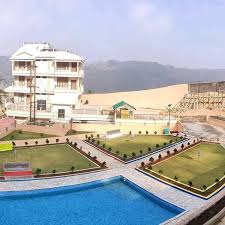
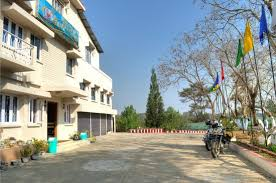
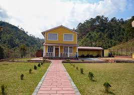
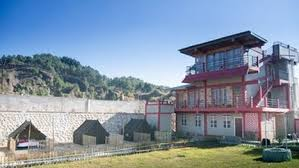

Hotel and Lodge
GHM Guest House

GHM Guest House is a welcoming accommodation option in Jowai, known for its comfortable lodging and friendly
service. The guest house offers a range of rooms, often designed to provide a cozy and homely atmosphere for travelers
and visitors.
Guests can expect clean, well-furnished accommodations, often equipped with essential amenities for a pleasant stay. The
location typically provides easy access to local attractions, making it convenient for exploring the area.
GHM Guest House may also offer additional services such as breakfast, free Wi-Fi, and assistance with travel
arrangements, ensuring a hassle-free experience. With its inviting environment and attentive staff, GHM Guest House is a
great choice for those looking for a relaxing stay in Jowai.
CTC Orchid Inn-GuestHouse

CTC Orchid Inn Guest House is a charming accommodation option in Jowai, known for its hospitality and comfortable
environment. The guest house typically offers a variety of well-appointed rooms designed to provide a cozy and relaxing
stay for guests.
With amenities such as free Wi-Fi, clean linens, and essential toiletries, CTC Orchid Inn ensures a pleasant experience
for both short-term and long-term visitors. The location is often convenient, providing easy access to local attractions
and eateries.
Guests can enjoy a warm and welcoming atmosphere, making it an ideal place for families, couples, and solo travelers.
Whether you’re exploring the scenic beauty of Jowai or just need a peaceful retreat, CTC Orchid Inn Guest House is a
great choice for comfortable lodging.
Haven's Cove Hote

Haven's Cove Hotel is a serene accommodation option in Jowai, offering guests a peaceful retreat amidst natural beauty.
Known for its welcoming atmosphere and friendly service, the hotel provides a range of comfortable rooms, often equipped
with modern amenities to ensure a pleasant stay.
Guests can enjoy well-furnished accommodations that typically feature scenic views, making it an ideal spot for
relaxation. The hotel may offer facilities such as a restaurant serving local and international cuisine, free Wi-Fi, and
outdoor spaces for guests to unwind.
Haven's Cove Hotel is conveniently located near local attractions, providing easy access for visitors to explore the
vibrant culture and stunning landscapes of Jowai. Whether for a family vacation, romantic getaway, or business trip,
Haven's Cove Hotel offers a delightful experience for all.
Resort Hotel In Jowai

Resort Hotel in Jowai is a popular destination for travelers seeking a blend of comfort and natural beauty. Nestled in a
picturesque setting, the hotel typically offers a range of well-appointed rooms and cottages designed to provide a
relaxing atmosphere.
Guests can enjoy various amenities, including a restaurant serving local and international cuisine, outdoor spaces for
leisure activities, and sometimes facilities like a spa or swimming pool. The serene surroundings make it an ideal place
for families, couples, or solo travelers looking to unwind and connect with nature.
With its convenient location, the Resort Hotel allows easy access to nearby attractions, such as scenic viewpoints,
hiking trails, and cultural sites, ensuring that guests can explore the rich heritage of Jowai while enjoying a
comfortable stay.